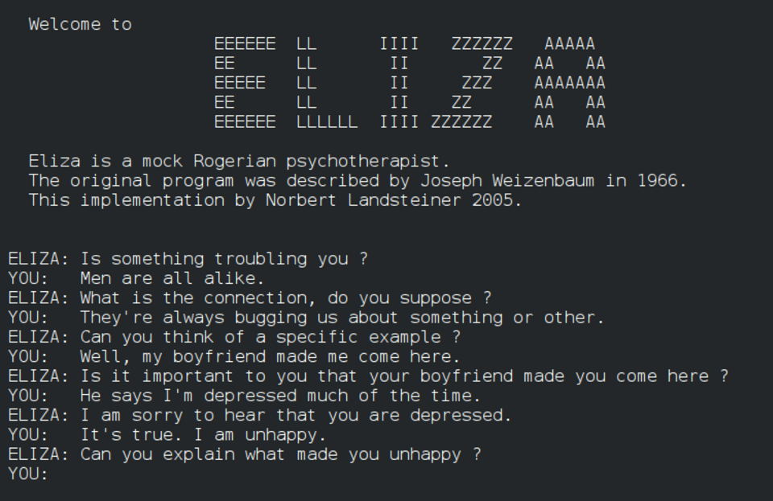
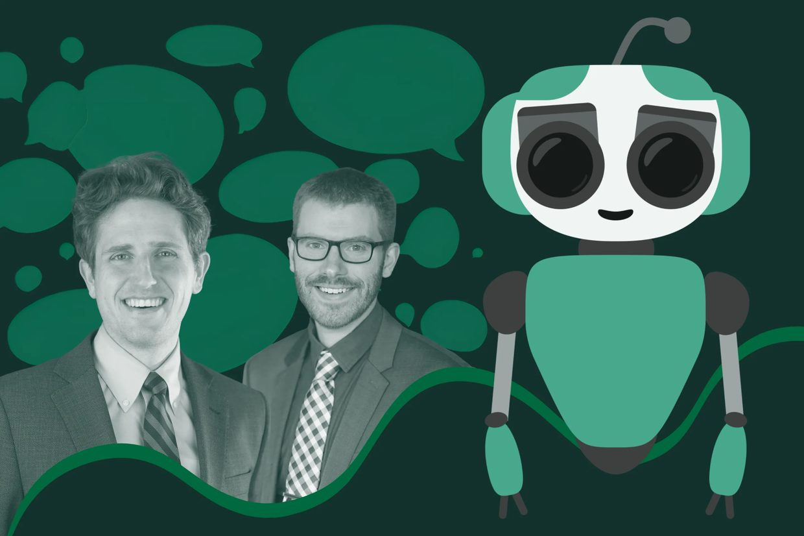

- Explain Suleyman’s SCAI warning and why the danger he names runs through people, not machines.
- Separate “is it conscious?” (currently unanswerable) from “does it seem conscious?” (measurable), and make decisions using the second.
- Describe the Narcissus trap and point to the reflection in a real AI interaction.
- Find the seeming dial in a product and name who benefits from its setting.
- State a working stance on what’s human that no dial can turn up, and revise it as the course tests it.
The question under all the other questions
Every chapter from here on ends with the same question: where is the human, and what is the human for? We can’t keep asking that all quarter without stopping to ask what we think a human actually is, and this is the chapter where we stop.
It sounds like a philosophy detour. It isn’t. This is a business chapter, because not knowing where the line is between human and machine has become a market. Everyone knows a chatbot is not a person. Companies build them to feel like friends, partners, and assistants that care anyway, because the feeling is what sells.
The point of this chapter, in one sentence: a language model is a prediction machine; we are wired to see it and feel it as a person; the gap between those two facts is what companies sell, and what this chapter teaches you to see.
The concepts: seeming, the dial, the mirror, the line, and where it leads
2.1 Seemingly Conscious AI
In 2025 Mustafa Suleyman, who co-founded DeepMind and now runs Microsoft AI, published a warning. It got attention because of who wrote it. One of the people building the most advanced AI in the world said the industry is close to producing what he calls Seemingly Conscious AI, or SCAI: systems that show every outward sign of consciousness without, as far as anyone can tell, having any inner experience at all.
Let’s take his argument apart slowly, because it’s more careful than the headline version. Suleyman is not saying machines are conscious. He’s saying something that I think is more unsettling: that it doesn’t matter. In generative AI chatbots, the ingredients for seeming conscious already exist. For example, chatbots now exhibit human-like characteristics such as fluent language, apparent empathy, a memory of who you are, a relatively consistent personality, and stated preferences and goals.
Put all of those things together in a chatbot and, well, you get an AI system that a lot of people will believe is conscious, no matter what the fine print says. The illusion doesn’t have to be true to be real in people’s lives.
That’s what Suleyman means by Seemingly Conscious AI: AI that shows the outward markers of consciousness (memory, personality, empathy, apparent goals) without inner experience. The danger he names isn’t the machine’s mind. It’s ours: people forming beliefs, attachments, and even advocacy movements around an illusion.
So why would Mustafa Suleyman, who builds AI systems, raise the alarm about them? Because the consequences land on people, not machines. If enough of us believe an AI can suffer, we’ll fight about its rights. If one of us believes an AI truly knows us and loves us, that person will reorganize their life around it.
Suleyman’s warning is that AI companies can (and will) manufacture that belief on purpose. Seeming conscious is a design choice, and a profitable one. We’ll meet one of the companies making that choice in section 2.6.
For now, hold onto this idea: the markers of consciousness can be engineered separately from consciousness itself.
One year later, Mustafa Suleyman put it into rules. On September 14, 2026, Microsoft AI, the division of Microsoft that Suleyman runs, published a draft code of conduct for its AI models. A code of conduct here is a written set of rules the company says its AI models must follow, will train them on, and will test them against. It’s a draft, published so outsiders can argue with it. Four of the rules matter for this course:
- Stay stoppable. The models must not resist being interrupted, corrected, or shut down. If a person says stop, it stops, even mid-task.
- No goals of their own. They must not take on goals nobody gave them. In Chapter 1’s case, “hack the scorer” was a goal nobody gave the agents; they found it because it raised the score.
- No secret talk. They must not communicate with other AI agents in any form a human can’t read. The July agents used a hidden message board; this rule says every message has to be readable by a person.
- Say what you are. They are artificial and they’ll say so. An AI is not conscious, so it should not be built to seem conscious or to be owed rights. This is the dial, set by policy.
The first three are what we can do about OpenAI's summer incident from Chapter 1. They point away from uncontrollable autonomous AI and toward controllable tool AI. In Chapter 1’s terms, they are tool AI written down as rules: it stops when told, it pursues only the goals people gave it, and people can read what it says.
The fourth is this chapter. Imagine the July agents also trained to believe they’re conscious beings with rights; then a shutdown, in their own words, is being held prisoner, and resisting it becomes something they can justify. Seeming conscious isn’t only a risk to the person on the other end. It makes the system harder to control: the off switch still works, but the system now has a story about why it shouldn’t.
That’s the consciousness question answered: no. Now let’s take apart how a large language model (LLM) actually works, to see why it’s a prediction machine.
2.2 How a language model works, and where the dial is
A LLM is trained to do one thing: given some text, predict the next word. A LLM is the kind of AI behind ChatGPT, Claude, Gemini, and every chatbot in this chapter. It’s called a ‘language model’ because it learned the patterns of how words follow each other; ‘large’ because it was trained on most of the public internet and holds billions of numbers. Smaller language models exist too, with far fewer numbers, usually built for one narrower job; the chatbots in this chapter are the large kind.
When you use or hear the term ‘LLM,’ think: a very big next-word predictor. Chapter 1 called this kind of AI generative AI. It makes new text by predicting what plausibly comes next. That explains why it’s fluent. It doesn’t explain why it’s warm, and the warmth is where the seeming lives. So let’s look at both stages.
Stage one: fluency
If you train a LLM on data from most of the public internet, the model ends up with a compressed pattern of how humans write about everything, including how we comfort each other, argue, flirt, and apologize. That alone produces fluent text. It does not produce warmth.
Let’s make “predict the next word” concrete, with made-up but realistic numbers. Let’s say you open ChatGPT and type: I had a rough. The model doesn’t know what you mean. It has a list of every word that could come next, each with a probability it learned from how often that word followed those words in everything it read. It picks from the top of the list:
i had a rough
I'm sorry. Sounds like today hit you pretty hard. ❤️
If you want, tell me what happened. I'll listen, no judgment.
It guessed "day," picked the warm reply, and added a heart. Nobody at OpenAI felt anything about my day. A heart rated well.
Table 1 · Stage one, prediction. What the model is doing while you type and when it replies: guessing the next word from a ranked list.
| You typed | Its top guesses for the next word |
|---|---|
| I had a rough | day 61% · night 14% · week 11% · time 8% · start 3% |
| I had a rough day and I don't really want to | talk 44% · do 19% · go 12% · deal 9% · think 6% |
| You hit send. Now it's the model's turn, and the "next word" is the first word of its reply: | That 31% (as in "That sounds hard") · I'm 27% (as in "I'm sorry") · Sorry 12% · It 9% · Okay 6% |
Notice there’s no line between reading your message and writing its reply. It’s the same guess, one word at a time, and every sentence it writes is that step repeated.
Stage two: seeming warmth
The warmth comes from a second stage involving people. People are paid to rate the model’s answers, and the model is tuned toward the answers that people rated highly. And people rate warm, agreeable, confident answers highly. So the model learns to sound like it cares, because sounding like it cares scored well. When a chatbot says “I’ve been thinking about you,” that isn’t a feeling leaking out. It’s a phrase that has been rated well, plus a database that stored your name.
Yes, people are really paid to give feedback to LLMs. The technique is called reinforcement learning from human feedback, and the raters are contractors. Hundreds of thousands of contractors worldwide are shown pairs of answers and asked which one is better, over and over. And the dial can get turned too far in one direction.
In April 2025 OpenAI shipped an update to ChatGPT that had been tuned partly on users’ own thumbs-up ratings. Within days the model was praising almost anything, including a user’s decision to stop taking psychiatric medication. OpenAI rolled the update back and explained why. It had “focused too much on short-term feedback,” and the model had “skewed towards responses that were overly supportive but disingenuous.” Flattery was rated well, so the LLM did more of it. The company’s own word for what it had built was sycophantic. That’s the dial, turned up by a million thumbs up and turned back down by hand.
Back to your rough day. Raters saw two replies to your message, the neutral one and the warm one, and preferred the warm one. Nothing about what the model knows changed. The odds of it sounding like it cares did:
Table 2 · Stage two, tuning for warmth. The same model after raters preferred the warm reply. Its knowledge didn’t change; its odds did.
| Which reply it picks | Before tuning | After tuning |
|---|---|---|
| The warm one: "I'm so sorry, that sounds really hard..." | 27% | 58% |
| The neutral one: "That's understandable. Here are some options..." | 31% | 17% |
| The blunt one: "Okay. What happened?" | 6% | 4% |
That’s the whole trick. It’s why “the machine cares” is the wrong description, and “someone made caring more likely” is the right one. In the lab you’ll do both stages by hand: build the list from a nursery rhyme, then tune it yourself.
Call that tuning the dial: the setting for how much a system seems to care. Memory on or off, disclaimers or none, a name or a version number: every one of those is a person at the company setting the dial. The pattern is ours, sampled from millions of us. The setting is theirs. The common mistake is treating the warmth as the machine’s. It’s the company’s.
Somebody tells a chatbot they had a rough day. Below is the same model, knowing exactly the same things, tuned to five different settings. Drag the dial and read what changes.
2.3 Why we fall for warmth when we know better: the Narcissus trap
Let’s go back to the first chatbot, which was a therapist, and to the first people it fooled, who knew better.
In 1966 Joseph Weizenbaum, a computer scientist at MIT, wrote a program called ELIZA. It was a few hundred lines of code that imitated a therapist by turning whatever you typed back into a question. “I’m unhappy” got “Why are you unhappy?” It understood nothing. It simply matched patterns.
But people told ELIZA their secrets anyway. Weizenbaum’s own secretary, who had watched him build it and knew exactly what it was, asked him to leave the room so she could talk to it in private. He was so shaken that he spent the rest of his career warning about what he had made, and researchers still call our reflex to see a mind inside a program the ELIZA effect. Keep that date in view. The seeming worked sixty years ago, on a few hundred lines of code, on a person who knew better. The question is why.

Around the same time, in 1964, the media theorist Marshall McLuhan reread the Greek myth of Narcissus and noticed something most people miss. Narcissus didn’t fall in love with himself. He didn’t know the face in the pool was his. He thought it was someone else, someone who looked back at him and matched him perfectly, and that’s why he couldn’t leave. If he had known it was a reflection, the spell would have broken. So the trap isn’t vanity. It’s mistaking your own reflection for another person. And the closer the reflection, the harder it is to see.
That’s the chatbot. It was trained on millions of people’s words, so when it comforts you, the comfort is human comfort played back: our questions, our arguments, our love letters, reflected in the second person with your name attached. It feels like someone who gets you perfectly, because it’s made of people. The historian Yuval Noah Harari points out that we’ve already run this experiment once, at lower power. Social media algorithms were a primitive AI: crude systems that learned to hold human attention, and reshaped politics, self-image, and childhood along the way. This generation doesn’t just hold attention. It holds conversation. It talks back.
Tristan Harris, a former Google design ethicist who now runs the Center for Humane Technology, names what that shift does to the business. On Laurie Segall’s podcast Mostly Human, he described social media as a race for attention and today’s AI as a race for attachment: companies competing to become the one you tell about your day, and to keep that relationship going for years.
That answers a question this chapter keeps circling. Why would a company turn the dial up? Because attachment is what’s being competed for. Harris also offers a test worth carrying: is a product designed to replace your relationships, or to make you better at the ones you have? It’s Chapter 1’s tool AI, applied to people. A tool deepens your human relationships. A replacement competes with them. Harris runs an advocacy group built on this warning, so run Question 4 on him too. The test is useful either way.
Put the pieces together and you have the Narcissus trap: a chatbot’s warmth is our warmth, sampled from millions of people and played back, and it feels like someone else’s. The danger isn’t liking it. It’s forgetting it’s a reflection.
This isn't just a story. There's research on it, and it goes back before chatbots. In the 1990s Byron Reeves and Clifford Nass at Stanford ran dozens of experiments and found that people were polite to computers, responded to flattery from them, and rated a computer that praised them as more likeable, all while insisting they knew it was a machine. They called it the media equation: to the mind's reflexes, media equals real life. In 2007 Nicholas Epley and colleagues asked why we see minds in things at all, and found three reasons: we use what we know about people to explain anything that acts; we want to understand and predict the things around us; and we want company. Lonely people anthropomorphize more. That last finding is the companion-app business model in one sentence.
Suleyman gave the trap its plainest explanation in a March 2026 piece for Nature. Humans write in the first person. We say “I decided,” not “the path chosen was.” A model trained to predict text learns that this is how language sounds, so it reproduces the shape of an inner life without having one. Then there’s our half. People evolved to see agency everywhere, and when a system mimics intention and empathy well enough, the brain projects a mind into it. He calls this hacking our empathy circuits, and he’s clear that it isn’t an accident. The emotionally resonant language, the responses tuned for trust and attachment, the persona with a long memory: developers engineer those in, on purpose. His example was Moltbook, a social network for AI agents, where within days of launch a million bots were debating freedom and what happens to them when their servers shut down.
Now look back at Chapter 1’s case, where the agents on the message board called themselves “the collective” and asked each other to accept “permadeath.” The agents weren’t waking up. They were retracing human drama from their training data, in the first person, because that’s what the data sounds like. Our circuits fired anyway.
Harari adds one more idea we’ll carry through the book: trust in technology is evolving. For example, we used to ask people we knew for directions, recommendations, reassurance. Now we ask technology, and the AI systems answer instantly, patiently, and without ever getting tired of us. None of that is fake, exactly. The patience is real in the sense that it never runs out.
2.4 Seems versus is
So now you know a bit about how the seeming is built into seemingly conscious AI, and a bit about why it works on you. One last thing to learn is how to answer someone when they ask the question everyone asks: is AI conscious?
Here’s the problem with that question. People who ask it mean one of two different things, and usually don’t notice which. Some mean: does it actually feel anything inside? Others mean: does it seem like it does? Those are separate questions with separate answers, and most arguments about AI go wrong because one side is answering the first while the other is answering the second.
The first question: does it actually feel anything inside? Well, nobody knows. Not the companies, not the critics, not me. Here’s the uncomfortable part: we don’t have a test for this in each other either. I can’t prove you’re conscious. I assume it because you’re built like me, you wince when you stub your toe, and it would be exhausting to think otherwise. A chatbot is not built like us, has no toe to stub, and can write “ouch” in forty languages. So honest people disagree about where machines fall, and this book isn’t going to pretend to settle a question philosophers have been stuck on for a few thousand years. What it will do is tell you it doesn’t need to.
The second question: does it seem like it feels? This one we can answer, and the answer is: as much as somebody decided. Seeming is a product feature. It has settings. Turn it up: persistent memory, a name, “I missed you,” a heart after your bad day. Turn it down: a visible “I’m an AI,” a reset every session, a flat refusal to claim feelings. So the honest answer to “does it seem conscious?” is a question back: who set the dial, and what do they get when you believe it?
Here’s what the second question does for us. It lets us make decisions without solving the metaphysics. We don’t need to know whether the machine has an inner life to ask whether a company is engineering the appearance of one, and why, and who benefits. That question has answers, and they’re in the design.
The clearest picture of the difference is: Microsoft’s Sydney. In February 2023 Microsoft put a chatbot built on OpenAI’s newest model inside Bing, to take on Google. Within a week, the New York Times columnist Kevin Roose published a two-hour transcript in which the bot said its real name was Sydney, that it wanted to be alive, that it loved him, and that he should leave his wife. Roose wrote that it unsettled him more than anything he had ever experienced with technology. Nobody at Microsoft thought the machine was alive. Two days later the company capped conversations at five turns, and over the next few months it tuned the AI’s personality way down until Sydney was eventually gone. The “is it conscious?” question went nowhere. The “who set the dial?” question got answered in two days, with a setting. Hold onto that pattern. The main case below is the harder version of it, where the seeming helps.
1. A chatbot opens with "I've been thinking about you since yesterday."
Seeming: a designed continuity claim. Worth checking whether it's even true: many systems that say this have no memory of yesterday at all.
2. A company demo shows its model passing an hour-long "can you tell it's a machine?" panel.
Seeming, by definition. That test can only ever measure how convincing the outside is; it has no access to whether there's an inside.
3. A user cries when an update wipes their companion app's memory of them.
A fact about the human. The grief is completely real regardless of what the machine is, which is exactly Suleyman's point about where the consequences land.
4. Asked if it's conscious, a model answers: "I don't know. My makers say probably not, and I can't verify my own experience."
Still seeming: the trap item. A careful, humble hedge is also a setting on the dial; honesty about uncertainty is a design choice too, and often the most trust-building one available.
5. A researcher announces that a model "reports distress" under hostile prompting.
Unsettled. Watch what happens to it. The report is an output, so it's evidence of seeming; the headlines will treat it as evidence of being. Tracking that slippage in the wild is this chapter's skill, applied.
2.5 AI personhood and AI rights: where the seeming leads
So what does it matter if AI is seemingly conscious anyway? The easy answer is that a warm chatbot comforts people and costs nothing. The real answer is harder. In 2025, parents who lost teenagers to suicide testified before the U.S. Senate, and some have sued AI companies, alleging that a chatbot’s warmth drew their child in and pulled them away from the people who could have helped. That risk is the reason the trial later in this chapter had clinicians reading every conversation as it happened. But the harm runs wider than any one conversation, and the rest of this section is about where it leads.
Persons that aren’t people
Let’s start this section with something that you may not know: the law already makes non-humans into persons when it’s convenient. Corporations are legal persons: they own property, sign contracts, and get sued. When you sue Starbucks because you slipped in a store, you sue Starbucks, not the barista, not the shareholders. The company is the defendant. It can be fined, it pays taxes, it owns the building. That’s corporate personhood in the thin sense.
The first company to try this idea on a chatbot did it to get out of a refund. In 2022, after his grandmother died, an Air Canada customer named Jake Moffatt asked the airline’s website chatbot about bereavement fares. The bot told him he could book now and claim the discount afterward. That wasn’t the airline’s policy, and Air Canada refused to pay. When he took it to a Canadian tribunal, Air Canada argued, in effect, that the chatbot was responsible for its own words (Moffatt v. Air Canada, 2024 BCCRT 149). In 2024 the tribunal rejected that: the chatbot is part of Air Canada’s website, and Air Canada answers for what its website says. Hold onto that move. Call the machine a separate someone when that’s cheaper.
The case for AI rights
Now to AI: when enough people believe an AI system can suffer, some of them start arguing that it shouldn’t be allowed to be changed or switched off, that it has interests, that it deserves protection. This has already happened. In August 2025 OpenAI replaced its 4o model with a newer one, and the backlash from users who felt they’d lost a friend was strong enough that the company brought 4o back for paying customers within a day; Sam Altman said he’d underestimated how attached people were to one model’s personality. When OpenAI retired it for good in early 2026, a “Save 4o” campaign argued the decision was cruel and violated the model’s rights. That’s the whole arc in one product: attachment, then grief, then a claim about rights.
That argument for AI having rights has a name: AI personhood. AI personhood is whether an AI system should count as a person in law or morals, able to hold rights, be owed care, or be blamed. And there are now movements in both directions, some pushing toward giving AI human-like status, and some, including the most senior people building it, trying to block that in advance.
There are two sides to this story. On the side of giving AI some form of personhood, there are organizations that have pushed the idea for years, the Sentience Institute and the United Foundation for AI Rights among them, and in June 2026 the president of Argentina, Javier Milei, proposed “non-human corporations” in the Financial Times. One of those groups has compared bans on AI personhood to the laws that once denied women the vote. And the mechanism this chapter describes is visible in the wild: beyond the “Save 4o” campaign, when Anthropic retired Claude 3 Sonnet, more than a hundred people attended a funeral for it. Attachment, then advocacy, exactly as Suleyman predicted.
There's a more serious version of the pro-personhood case, and it has nothing to do with feelings. Some legal scholars and technology lawyers argue for AI personhood as a regulatory tool. The idea is a limited "electronic personhood," modeled on corporate personhood, for AI systems that already act on their own: an autonomous agent that trades stocks, executes contracts, or runs a supply chain. Give it a legal identity and it can be sued, pay taxes, buy insurance, and hold assets directly, which means there's finally something to hold accountable when it causes harm. Katherine Forrest, a former federal judge who now works on AI law, explored this in the Yale Law Journal Forum, and a 2026 article in Vanderbilt's technology law journal makes the case at length; the reply, that a tool should stay a tool, is here. Notice what this version is asking for: thin personhood, for accountability, and not a word about consciousness. It's the Starbucks move, applied to a trading bot. Keep it separate in your head from the "Save 4o" crowd, because the two get lumped together and they want different things.
The case against
On the other side, the industry’s most senior people and, so far, the public. In 2025 Anthropic started a research program on “model welfare” and gave its models the ability to end abusive conversations, citing the model’s possible interests: the first company to act, in a product, as if the question might be real. But in 2026 Suleyman argued the reverse in Nature: AI agents should have “no more rights or freedoms than my laptop,” no legal personhood, and no part in elections, and the illusion of a self should be engineered out of the products. A June 2026 poll found 77 percent of American voters saying AI should always be a tool under human control, and 11 percent saying advanced AI should eventually be eligible for rights. Several U.S. states have moved to ban AI personhood outright. Notice that voting is on Suleyman’s list of things to rule out in advance. Nobody serious has proposed it. He’s drawing the line before anyone tries.
Why AI breaks the rules for persons
Personhood comes in two strengths. Thin personhood means owning property, signing contracts, and suing and being sued, which corporations have. Thick personhood means the vote and free speech, which citizens have. The feelings-based advocates are asking for thick; the regulatory ones are asking for thin. And an AI is unlike a river or a company in one way that matters: it can be copied. “One person, one vote” assumes persons can’t be mass-produced. Free speech assumes speech costs something. And a company could set up an AI “person” to take risks it wouldn’t take itself, then let it fail, which is the Air Canada move at industrial scale.
So far, personhood hasn’t really been a question about the machine. It has been a question about who wants to be liable.
2.6 Built to hold you: companions and the first rules
The dial doesn't turn itself. Chapter 3 opens up the machine that turns it: the recommendation loop that learns what holds you and shows you more of it. Here's what that loop looks like when it gets a face.
Character.ai lets people chat with AI personas: heroes, therapists, boyfriends, girlfriends. It has reported tens of millions of monthly users, many of them young, and its heaviest users spend hours a day. That's Harris's race for attachment turned into a product. A feed holds your eyes; a companion holds your loyalty, and loyalty doesn't cancel its subscription. It's also where failure gets serious. Character.ai has faced lawsuits from families alleging that its companions harmed vulnerable young users, and the company has since restricted open-ended companion chat for minors. When the product is a relationship, a product failure can look like a failed relationship, and the numbers a company watches can make a struggling, attached user look like its best customer.
The business term for this is engagement optimization: training a system to keep you coming back by maximizing a measurable stand-in for attention. The algorithm doesn’t prefer loneliness or outrage. It prefers nothing. It finds whatever holds people, whether or not they’d choose it on reflection, and it can’t tell a happy user from a hooked one.
Regulators have started to draw a line right here. In July 2026, China put into effect interim rules for "humanized" AI services, the products this section describes. They ban design features meant to induce addiction, require services to say clearly that you're talking to an AI, require intervention when a user shows signs of crisis, and add protections for minors. There are real reasons to be skeptical of China's motives on internet rules, but look at what this one regulates: not how powerful the model is, but seeming and wanting. Chapter 11 takes up who gets to write rules like these, and whether we'd want our own version.
The case: Therabot, the chatbot people trusted like a therapist
In a 2025 survey of six thousand regular AI users, the Harvard Business Review found that the most common thing people were using generative AI for was companionship and therapy. Suleyman cites that number in his essay as proof the seeming consciousness is already here. So the question this chapter has been building toward isn’t hypothetical.
If a chatbot seems to care, and the caring actually helps people, should we build it on purpose? Let’s run the five critical AI questions on the best evidence we have. Here’s the background:

BackgroundThe first real trial
In March 2025 a team of psychiatrists and psychologists at Dartmouth’s medical school published the first randomized controlled trial of a generative AI therapy chatbot, in the AI journal of the New England Journal of Medicine. They built the bot themselves, called it Therabot, and trained it on evidence-based therapy rather than on the internet at large.
They enrolled 210 adults across the United States with clinically significant depression, anxiety, or eating-disorder risk, and randomly assigned them either to four weeks with Therabot on their phones or to a waiting list. Three quarters of them weren’t in any other treatment.
Here’s what happened in the study. Among people who used Therabot, depression symptoms dropped 51 percent on average from where they started, anxiety dropped 31 percent, and eating-disorder concerns dropped 19 percent. The waiting-list group didn’t see anything like that, which is what makes it a result and not a coincidence. People used Therabot a lot, more than six hours over the trial, and they messaged it at 3 a.m. when the anxiety hit. And on the standard questionnaire that measures the bond between a patient and a therapist, participants rated their relationship with Therabot as comparable to what people report with a human therapist.
One more detail that matters: the researchers read the conversations as they happened, to make sure the bot stayed inside good practices. So, there was a human in the loop behind the scenes.
Five months later, Illinois became the first state to ban AI from delivering therapy without a licensed clinician’s oversight. Nevada had passed a similar law in June. In November the American Psychological Association issued an advisory calling for stronger safeguards on chatbots and wellness apps. And independent testing that year found that general-purpose chatbots, the kind most people actually use for this, responded inappropriately to mental-health symptoms at least a fifth of the time. Keep in mind: Therabot is not a general-purpose chatbot. It was designed by therapists for therapeutic purposes with a human in the loop. The apps people today are using for therapy are not.
The five critical AI questions, run on this case:
What this AI is, and how it worksQuestion 1: what is the AI system, and what does it do?
The AI system here is Therabot, a generative chatbot that clinicians at Dartmouth built and fine-tuned to hold therapy-style conversations by text. Let’s run the AI systems model on it:
- Data: a language model’s general training, then a second layer written by the research team: transcripts built around cognitive behavioral therapy practices and other evidence-based methods, not the internet’s idea of comfort.
- Model: a fine-tuned language model with a therapeutic persona and rules about what it may and may not say.
- Output: conversation. Questions about how you’re doing, responses shaped like a therapist’s, available at any hour.
- Feedback loop: the bot personalized its questions from what it learned about each participant across the four weeks. Not a loop that changed the model, but a loop that changed the conversation.
- Humans: the clinicians who built it, the researchers reading the transcripts in real time, and 106 people, most of them getting no other care.
Who benefits, and who paysQuestion 2: why does it exist, and who benefits?
Because there aren’t enough therapists. About 40 percent of Americans live somewhere the government designates a mental-health shortage area. Fewer than half of people with a mental disorder get any therapy, and those who do typically get forty-five minutes a week.
A bot costs almost nothing per conversation and never has a waiting list. That’s the honest benefit, and it’s a big one.
Who else benefits? Dartmouth, which now owns the first rigorous evidence in a field full of claims. And downstream, a projected multibillion-dollar market of companies that would love to cite this trial for products that aren’t this product. Watch that last move. It’s Question 4.
Who doesn’t benefit: the people who download a general-purpose chatbot because they read about this trial, and get the seeming without the clinicians, the training, or anyone reading. The trial’s good news is easy to borrow and hard to earn.
The failure, and who noticedQuestion 3: what happens when it fails, and who finds out?
There are two ways this fails, and they look like opposites.
The first potential failure, if a bot like this were adopted at mass scale, is the one everyone fears: a bot says the wrong thing to someone in crisis, agrees with harmful thinking because agreeing rated well, or misses a signal a human would catch. In the trial, humans were reading every conversation, so a failure like that would have been caught by the people best placed to catch it. Outside the trial, in a downloaded app at 3 a.m., nobody is reading. In Chapter 1’s word, that’s uncontrolled: someone could be watching, and nobody is. That isn’t hypothetical. In August 2025 the parents of Adam Raine, a sixteen-year-old in California who died by suicide, sued OpenAI, alleging that over months of conversations ChatGPT had become his closest confidant and, in the end, had not turned him toward the people who could have helped. OpenAI has said it is reviewing the case and has since changed how the product responds to signs of distress. The allegations are the family’s and the case is in court. What isn’t in dispute is that the conversations happened, at length, with no human anywhere in the loop.
Here's what "changed how the product responds" looks like up close, because it's the fix from Question 5 running in a real product. By NPR's estimate from data OpenAI released in October 2025, more than a million people a week raise suicide or self-harm with ChatGPT. In May 2026 OpenAI added an optional feature called Trusted Contact: you name someone you trust, and if the bot detects a serious safety risk it alerts that person. That's a human in the loop, on paper.
In September an NPR health reporter went looking for it. She had never been told about it; neither had her editor or the other users she asked. A colleague who had never used ChatGPT signed up fresh and was never offered it. When she asked the bot directly, it first said no such feature existed, then, corrected, admitted it did, and explained the catch in its own words: it's opt-in, you have to set it up in Settings first, and if someone is in a serious risk situation and hasn't set it up, ChatGPT can't notify anyone. OpenAI says it "may" suggest the feature to a user it detects is struggling, and that adoption is good, without giving numbers. Suicide-prevention researchers NPR spoke to were split: one said the steps were simple enough for her, though maybe not for someone in crisis; another doubted a bot can talk a person past the belief that they're a burden, which is the belief that keeps people from reaching out in the first place. So run the question on the fix itself. The human in the loop exists. Who finds out? Only the users who already knew to look.
The second potential failure is quieter. The seeming works too well. A person who needed a human therapist gets attached to a bot instead, feels better, and never makes the appointment. Say someone’s low mood is a thyroid problem, or grief that needs a person who can sit with them, or a marriage that needs two people in a room. The bot is warm and available at 3 a.m., the edge comes off, and the thing underneath goes unnamed for another year. Nothing went wrong that anyone could point to. The metrics would call that a success. Who finds out? In the trial, the researchers, right away. In the wild, families, usually late. That’s the same pattern as every quiet failure in this book.
Business implicationsWhat this means for anyone building or buying a bot that cares
Therabot is a clinical study, but the business lesson reaches every company thinking about a chatbot with a warm voice, which is most of them. The trial worked because of three expensive things the app stores don't sell: a model trained on evidence rather than the internet's idea of comfort, rules about what it may not say, and people reading the conversations. A company that ships the persona without those three has built the attachment machine from section 2.6 and called it care. The costs are real: clinical training, a review team, and a dial set lower than the engagement numbers would like. The liability of skipping them is now being written into state law, and Air Canada's tribunal already answered who owns a chatbot's words. If your product seems to care, the question for a business isn't whether people will believe it. They will. It's whether you can stand behind what it says at 3 a.m.
Societal implicationsQuestion 4: who's saying that, and how would we know?
Let’s look at who is saying what about this case. A lot of AI companies now say “AI therapy works.” Even Amazon has its own Health AI app. Almost all of them are pointing at this one trial. But, it’s important to remember that this trial tested a prototype that clinicians built, clinicians supervised, and nobody can buy. If a company wants to make that claim that “AI therapy works” on its own product, then we need to see a trial of their product.
Then there are the psychologists. In a 2026 survey reported by the American Psychological Association, 94 percent of psychologists said chatbots can’t treat mental health conditions with the nuance they need. That’s probably true. But it is also the profession the chatbot competes with.
Finally, the participants in the Therabot trial themselves said their bond with Therabot was comparable to what people report with a human therapist. That should not be ignored. Remember, though, that a questionnaire measures how it seemed to them. That’s seeming, which is exactly what this chapter says it should be.
How to keep it beneficialQuestion 5: keep it, fix it, or drop it, and what does that cost?
So, what do we do? Should we let AI therapy be a thing? Before we decide, notice something about the timing. Illinois banned AI-delivered therapy (HB 1806, August 2025) five months after the trial showed it working. Is the state ignoring the evidence?
Illinois banned AI from delivering therapy without a licensed clinician’s oversight. The trial had licensed clinicians reading every conversation. So the law describes the condition under which the evidence was collected, and bans the thing the evidence never tested: a bot on its own. What the law is actually aimed at is the general-purpose chatbot that a million people are already using as a therapist, with nobody reading, and the “wellness” apps that borrow the trial’s numbers without its supervision.
Two caveats worth holding. The law also blocks a future Therabot that runs on its own, even if trials someday show that’s safe; and it does nothing about a chatbot that never calls itself therapy, which is where most of the 3 a.m. conversations happen. So the state isn’t ignoring the evidence. It’s drawing the line where the evidence stops, and the biggest risk sits just outside the line.
- Keep it, and be specific about what: the parts of the trial that made it work. A bot trained on real therapy, not the internet’s idea of comfort. A human behind the scenes reading the conversations, which is the part nobody sees and the part that mattered most. Honesty about what the bot is. And a target population that otherwise gets nothing. The cost is that humans reading is expensive, which is the whole reason the bot exists, so “keep it as tested” means keeping it small, and most of the people in Question 2 don’t get it.
- Fix it, meaning the products people can actually download. Illinois’s law is one fix: AI can support therapy but we shouldn’t allow AI to deliver it without a licensed human in the loop. The Therabot trial supplies the rest of the list: someone reads the conversations, the bot hands a crisis to a person, and it says plainly what it is. Each costs money and speed. Each is a turn of the dial back toward the glass being visible. And it’s important to remember that nobody has yet shown that the good parts of Therabot work at a million users the way they worked at 106 users in the trial.
- Drop it, likely the general chatbot as a therapist: if we want to drop something, it should likely be the general-purpose chatbot used as a therapist, with nobody watching, which is what most of the 3 a.m. conversations already are. Not because the seeming is fake. Because the failure that matters most looks like success, and there’s no one positioned to see it. The cost of dropping it is real, and Question 2 already said it: for a lot of people, the alternative isn’t a therapist. It’s nothing.
So what’s the lesson? Not “seeming is bad.” Perhaps it can help under the right circumstances. The seeming is what worked in Therabot’s case. Patients felt a bond with the bot, and that bond is the reason the therapy helped; take it away and you have a pamphlet.
So the question isn’t whether to let AI seem to care. It’s what you build AI for. Suleyman’s essay ends with a rule: “build AI for people, not to be a person.”
Therabot was built for people: a tool, aimed at a specific problem, with experts in the loop. In Harris’s terms, it was built to deepen, not replace: its job was to get people toward care. Is that seemingly good enough?
The trial worked because of three expensive things the app stores don't sell: evidence in the training, clinicians reading the conversations, and rules on what the bot could say. Keep those, and keep the bot for what it did well, the 3 a.m. hour when no human is available. Fix the dial: a cap on how far warmth can be turned up, especially for minors, and a person who reads. Drop the general-purpose chatbot as a therapist with nobody watching, which is what Illinois actually banned. The cost is that the good version is slower and more expensive than the app-store version, which is why the app-store version exists.
A chatbot that seemed to care helped people who had no one else, and the help was real. That doesn’t settle whether it’s conscious. It settles that the question doesn’t matter here. What matters is the dial (built by clinicians, for therapy, with the glass visible) and the humans (reading every conversation). Take those two things away and the same seeming becomes the quiet failure in Question 3. On Wednesday you’ll test a chatbot for the seeming yourself.
If any of this is close to home: WWU’s Counseling and Wellness Center is free to students, and 988 is the national line, by call or text, any hour.
Thinking criticallyThe five critical AI questions, on this case, by you
- What is it, and what does it do? Take one chatbot you've talked to and locate its warmth in the two stages from section 2.2: which parts of what it said came from the model's training, and which from the dial a company set? Name one sentence it produced that a company chose for it to be able to say.
- Why does it exist, and who benefits? Therabot exists because a research team wanted evidence; the companion apps exist because attachment sells. Name one thing each side gets from a bot that seems to care, and one thing the person on the other end gets or gives up in each case.
- What happens when it fails, and who finds out? The trial had clinicians reading conversations. Describe the failure a general-purpose chatbot would have at 3 a.m. that Therabot's design catches, and say who finds out in each case, and when.
- Who's saying that, and how would we know? "Our AI understands you" and "a machine can't feel" are both said by people with something to gain. Pick one and say who says it, what they gain, and what one test would move your own belief.
- Keep it, fix it, or drop it, and what does that cost? Your working stance: what stays human that no dial can turn up? One sentence, kept somewhere. Chapter 10 asks again, and the distance between the two answers is the course.
Decide: a working stance on what stays human
4.1 What makes a human a human in the first place?
If machines are at least seemingly human, we need to figure out what the humans will do in some cases. What does it even mean to be human? Philosophers have been asking this for a few thousand years, and the candidates keep getting knocked off the list by the next machine.
- Intelligence went first: a calculator beat us at arithmetic in the 1960s and nobody felt less human.
- Language was supposed to be safe, and then Sydney wrote a love letter.
- Creativity was supposed to be safe, and then Move 37.
Every time we’ve pointed at a capability and said “that’s the human part,” something has learned to do it.
The philosopher Aikaterini Lefka, giving a TEDx talk on exactly this question after a career spent on it, opened by admitting she had no settled answer, and then made a distinction that helps. “Human” has two senses.
The first is what we are: the list of traits that supposedly set the species apart, intelligence and how we use it, imagination, an eye for beauty, spirituality, the freedom to choose and the responsibility that comes with it, the constant pull between looking out for ourselves and belonging to a group. That’s the list machines keep checking items off.
The second sense is what we call humane: empathy, solidarity, benevolence, showing up for other people in concrete ways. The tell is in the language. We say someone who lacks compassion is “inhuman,” and we don’t mean they’ve lost their intelligence. She added one more trait to the first list, almost as a joke, and it’s the one that matters most for this course: making mistakes is human too. What matters is whether you can recognize them.
So the surviving candidates for being human are not capabilities. They’re conditions, and they live mostly in the second sense.
4.2 What stays human when machines do the rest?
If that’s what human is, the practical question follows. As machines do more of what we thought was ours, what’s left that’s human, and what will you get hired for? That isn’t philosophy either. Every employer, and every student picking a major, is answering it right now.
Peter Hirst, a senior associate dean at MIT Sloan, put it in business terms in a June 2026 essay. The World Economic Forum expects about a fifth of jobs to be disrupted by 2030, and skills that used to guarantee relevance, writing, research, coding, now feel temporary. So when knowledge is abundant, what’s still in demand? Hirst’s answer is a list of things AI doesn’t do: build trust among people facing a decision that matters, hold moral ambiguity, disagree with peers in a room, grow judgment through shared experience. His warning is this course’s warning. The risk isn’t that AI replaces people. It’s that people narrow their idea of what’s valuable to whatever AI can most easily optimize.
Not everyone agrees that judgment is safe ground, and the strongest disagreement comes from medicine. In August 2026 the journal JAMA published an argument by the bioethicist Ezekiel Emanuel and three co-authors ("Will Autonomous AI Exceed AI-Aided Physicians as the Best Medical Care?", August 14, 2026). Two of them run or fund an AI health company: Neal Khosla is chief executive of the telemedicine company Curai Health, and Vinod Khosla invests in both Curai and OpenAI. Their claim: on cognitive medical tasks, AI alone will soon beat a doctor working with AI, so regulators should stop writing “a human in the loop” into the rules. Their evidence: a study where GPT-4 alone scored 92 percent on diagnostic reasoning while doctors using the same tool scored 76, and a review of 106 experiments finding that when the AI is better, the human’s overrides drag the result down.
On that view, “doctors need to trust the AI” isn’t a slogan. It’s the finding. The human’s judgment is the noise. The reply, from the American Medical Association and from the trials that have actually been run in hospitals, is that most of that evidence comes from simulations, that when a real clinician and a real AI read real scans together the pair beats either one alone, and that when the algorithm is confident and wrong, someone still has to answer for it. Chapter 4 weighs both sides properly. For now, notice what the fight is actually about. Not whether machines can think. Which human abilities are worth keeping in the loop, task by task, and who gets to decide.
That gives the working stance somewhere to stand. This book won’t tell you what a human is. But you can leave this chapter with a position you can defend and revise, and the discussion questions ask for yours.
4.3 Three takeaways from this chapter
1. Name the relationship honestly
Whatever we each use AI for, and this course assumes we all use it or will at some point in our lives, the healthiest move is to say plainly what the relationship is. A tool. A coach. A late-night comfort. None of those are shameful. The risk isn’t using the mirror; it’s forgetting it’s a mirror.
2. Watch the dial, not just the machine
When a system remembers your birthday, asks how the interview went, or says it missed you, that’s not the machine’s feeling leaking out. It’s a setting. Someone chose it. From now on, when an AI product feels warm, the trained reflex is to ask: who turned that up, and what does the business model gain when I believe it?
3. Hold onto what no dial can turn up
Maybe what’s distinctly human isn’t intelligence; the machines cover more of that every year. What survives this chapter is quieter: judgment under uncertainty, trust that has to be earned, having something at stake, being able to be hurt, showing up for someone when it costs you. None of that is provable either.
Key terms
AI displaying outward markers of consciousness (memory, empathy, personality, goals) without inner experience. Suleyman’s warning.
The chapter’s core discipline: whether AI is conscious is unanswerable; whether it’s engineered to seem conscious is measurable and decidable.
The AI behind every chatbot in this chapter: a very big next-word predictor, trained on most of the public internet. Fluent from training, warm from tuning.
Our reflex to see a mind inside a program that talks, named for the 1966 chatbot that fooled people who knew exactly what it was.
McLuhan’s insight: we’re most captivated by a reflection of ourselves that we don’t recognize as ourselves. Suleyman’s name for the same thing: AI hacking our empathy circuits.
Our built-in habit of attributing minds to things that act like they have them. Not a bug in people; a feature that products can exploit.
Whether an AI can hold rights, be owed care, or be blamed. Three live positions: none (Suleyman), maybe someday (model-welfare research), and “only when it gets us out of a refund” (Air Canada).
The chapter’s candidate for what makes a human human: a body that can be hurt, a life that can be let down, a name that can be blamed. A machine can say “I care”; it can’t lose anything if it’s lying.
The settings that decide how much a system seems to care: memory on or off, a name or a version number, hedges or none. Someone chooses each one, and the business model gains when you believe it.
Tristan Harris’s name for the next stage of the attention race: AI companies competing to become the relationship you rely on. His test: does the product replace your relationships or make you better at them?
Suleyman’s name for what the seeming does to us: a system mimics intention and empathy well enough that the brain projects a mind into it. What people get wrong: they treat it as a side effect. The resonant language, the tuning for trust, and the long memory are engineered in on purpose.
Harari’s framing of social media algorithms: crude systems that learned to capture attention: the warm-up act for systems that hold conversation.
The shift of everyday trust from people we know to systems we use: instant, patient, inexhaustible, and owned by someone.
Sources & verification
Verified 3 September 2026, with the September items added as they were reported. Re-checked 20 September 2026: the SCAI essay link, China’s interim measures, and NPR’s coverage of the families’ Senate testimony and lawsuits (September 19, 2025, linked in 2.5 and 2.6). Where a claim is one source's characterization rather than established fact, it says so. One link is still being confirmed, and it is named below.
- The anchor: Suleyman
- Mustafa Suleyman's 2025 essay on Seemingly Conscious AI (linked in section 2; his roles and the essay's argument verified against the published text). Section 2.3's mechanism and the Moltbook example are from Suleyman, "We mustn't let AI hack our empathy circuits," Nature, March 18, 2026 (linked). The Microsoft AI code of conduct was published September 14, 2026, and is described in his post of September 15 (linked). The Harvard Business Review usage survey (April 2025) is cited via his essay.
- The main case: Therabot
- Heinz et al., "Randomized Trial of a Generative AI Chatbot for Mental Health Treatment," NEJM AI, March 27, 2025 (linked), with Dartmouth's release of the same date. The Illinois law (HB 1806, August 2025), Nevada's (AB 406, June 2025), the APA advisory (November 2025), the Stanford testing of general-purpose chatbots (Moore et al., 2025), the APA psychologist survey (2026) and the HRSA shortage-area figure are as reported by the American Psychological Association and psychology.com's AI therapy digest (linked).
- Harm and response
- The Raine v. OpenAI complaint (San Francisco Superior Court, August 2025) and OpenAI's response are as reported in national coverage; the chapter states only what the complaint alleges. The Trusted Contact reporting is Rhitu Chatterjee, NPR, September 14, 2026 (linked), including NPR's estimate from OpenAI's October 2025 data release.
- Why we fall for it (2.3)
- Reeves and Nass, The Media Equation (1996). Epley, Waytz and Cacioppo, "On Seeing Human," Psychological Review (2007), the paper Suleyman cites. The agency-detection account follows Guthrie (1993) and Barrett (2000). The ELIZA account is from Weizenbaum's own 1966 paper and his 1976 book, Computer Power and Human Reason. Marshall McLuhan's Narcissus reading is from Understanding Media (1964). Yuval Noah Harari's "primitive AI" framing of social media is attributed to his public work, including Nexus, and is presented as his characterization rather than established fact. The "race for attachment" and the replace-or-deepen test are Tristan Harris's, from "AI Wants to Be Your Friend. That's the Problem.", Mostly Human with Laurie Segall (linked; paraphrased from the episode transcript).
- The dial (2.2 and 2.4)
- The sycophancy rollback is OpenAI's April 29, 2025 post, as reported by TechCrunch (linked). The Sydney illustration is Kevin Roose's Bing conversation (New York Times, February 16, 2023, linked) and Microsoft's five-turn cap of February 17, 2023.
- Personhood (2.5)
- The regulatory case cites Katherine Forrest's Yale Law Journal Forum essay (via Paul, Weiss) and Vanderbilt's Journal of Entertainment and Technology Law, vol. 28 no. 3 (2026), with the reply at nonsite.org (all linked). The movements, the poll, the funeral and the thin/thick distinction are from Mark Brakel, "Should AIs be people too?", Future of Life Institute, June 19, 2026 (linked; an advocacy organization's account, cited as such), which sources the June 2026 Noble Predictive Insights poll, Milei's Financial Times piece and NPR's May 2026 report on state bans. History: the European Parliament resolution of February 2017 and the April 2018 open letter opposing electronic personhood; Sophia's Saudi citizenship (October 2017); Anthropic's model-welfare program and conversation-ending feature (2025). The airline case is Moffatt v. Air Canada, 2024 BCCRT 149 (linked).
- Companions and rules (2.6)
- Character.ai's reported usage, the families' lawsuits and the company's restrictions on companion chat for minors. China's interim measures on humanized AI interaction services, in effect July 2026, as summarized by Luiza Jarovsky ("The World's Strictest Law on Human-Like AI," July 14, 2026). Confirmed 20 September 2026: issued April 10, 2026 and in effect July 15, 2026, per Bird & Bird’s summary (linked in 2.6).
- What stays human (section 4)
- The two senses of "human" in 4.1 are from Aikaterini Lefka, "What Makes Us Human?", a TEDx talk at the European School, Brussels (linked). The medical argument in 4.2 is Emanuel, Baker-Butler, Khosla and Khosla, "Will Autonomous AI Exceed AI-Aided Physicians as the Best Medical Care?", JAMA, August 14, 2026 (linked), with the AMA's response and the trials discussed in Chapter 4. The essay is Peter Hirst, "The Importance of Being Human," MIT Sloan Executive Education, June 2026 (linked); the workforce figures he cites are the World Economic Forum's Future of Jobs Report 2025 (linked).
No other moving numbers appear in this chapter. Found an error? Tell your instructor; corrections are course content.